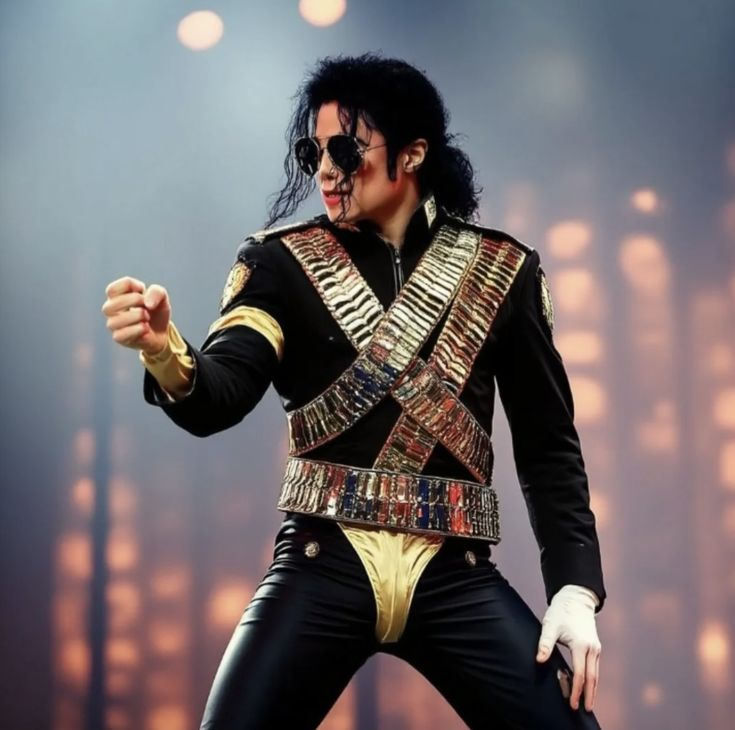
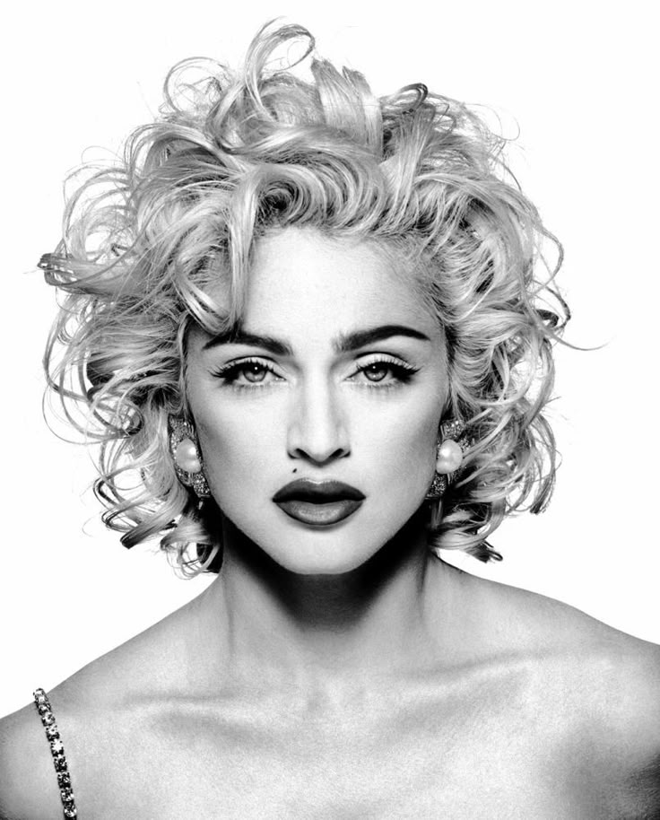
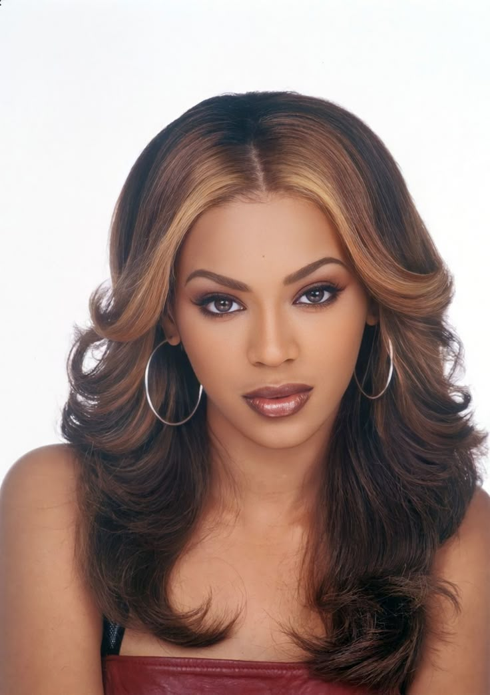

¿ Quiénes fueron estos grandes íconos Mundiales ?
Conoce su historia y el por qué de su fama
A lo largo de la historia de la música, han surgido artistas que no solo han marcado generaciones, sino que también han transformado la industria con su talento, visión y autenticidad. Esta sección está dedicada a cinco íconos cuyo legado ha trascendido el tiempo y las fronteras: Shakira, Madonna, Michael Jackson, Freddie Mercury y Beyoncé. A través de sus historias conocerás cómo forjaron sus caminos, superaron obstáculos y dejaron huellas imborrables en el corazón de millones de fans alrededor del mundo.
Shakira
Shakira ha llevado la cultura colombiana a todos los rincones del planeta. Desde sus inicios en Barranquilla hasta escenarios como el
Super Bowl, Representa el poder de la mujer latina en la industria global.

Michael Jackson
El "Rey del Pop", ícono global conocido por su música innovadora, bailes electrizantes y carisma inigualable.

Madonna
Reina del pop camaleónica y provocadora, influyente en música, moda y cultura a través de su constante reinvención.
Freddie Mercury
Legendario líder de Queen, famoso por su voz prodigiosa, presencia escénica electrizante e himnos atemporales.

Beyonce
Poderosa vocalista y artista multifacética que celebra el empoderamiento femenino en su música de R&B, pop y hip-hop.